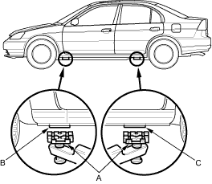
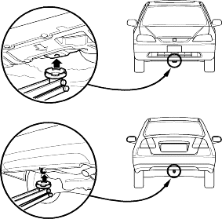

Frame Hoist
- Position the hoist lift blocks (A), or safety stands, under the vehicle's front support points (B) and rear support points (C).

- Raise the hoist a few inches and rock the vehicle gently to be sure it is firmly supported.
Safety Stands
To support the vehicle on safety stands, use the same support points (B and C) as for a frame hoist. Always use safety stands when working on or under any vehicle that is supported only by a jack.
- Block the rear wheels when raising the front of the vehicle; block the front wheels when raising the rear of the vehicle.
Place the blocks behind and ahead of the wheels.
- Raise the vehicle high enough to insert the safety stands.
- Adjust and place the safety stands so the vehicle will be approximately level, then lower the vehicle onto them.
